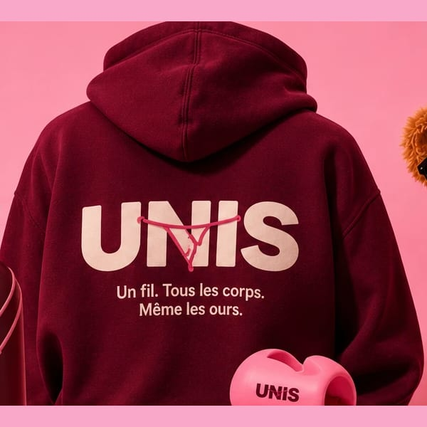

Site e-commerce
Boutique multilingue
200 pages en 4 langues, fiches produits, panier, packs cadeaux, données structurées et contrôles automatiques (titres, contrastes, liens).
OuvrirE-business · Marketing digital · Intelligence artificielle
Étudiant·e en e-business, j'ai conçu UNIS, une marque européenne de strings unisexes et son ours mascotte, en orchestrant toute la chaîne (stratégie, site, SEO, publicité, emailing, réseaux sociaux, vidéo) depuis une seule interface d'IA connectée à mes outils.
une interface, toute l'entrepriseUne marque e-commerce européenne fictive mais complète : strings unisexes à 5 €, drops saisonniers en série limitée et Bo, un ours de collection qui sert de mannequin.

Chaque carte mène à une page réelle du projet.
200 pages en 4 langues, fiches produits, panier, packs cadeaux, données structurées et contrôles automatiques (titres, contrastes, liens).
Ouvrir
6 questions, une recommandation de produit réel et une alternative. Pensé pour réduire l'hésitation au moment du cadeau.
Ouvrir
Campagnes saisonnières, newsletters et relances automatiques (bienvenue, panier abandonné, avis), en HTML compatible Gmail et Outlook.
Ouvrir
16 publications alignées sur les emails, 9 Reels montés par script, stories à la une et épingles Pinterest.
Ouvrir
Direction artistique, script de 30 s en 9 plans, déclinaisons 15 s et 6 s, et prompts de génération vidéo.
Ouvrir
17 objets avec prix, visuels découpés automatiquement à partir d'une photo de collection et ajout au panier.
Ouvrir
Une page dédiée, un projet de don par article présenté honnêtement (« partenariat en cours de discussion »).
Ouvrir
Tous les livrables réunis : fiche Google, QR code, moodboard, campagnes, merch.
OuvrirPlutôt que dix outils séparés, une IA connectée aux fichiers, au code, au navigateur, au dépôt Git et aux services en ligne. Je décris le besoin, je valide, l'IA exécute et vérifie.
« Les connecteurs sont l'avenir des entreprises : une seule interface, et l'ensemble se pilote à partir d'elle. Plus qu'un ERP : un créateur de contenu, un développeur et un analyste. »
Ma conviction après ce projetStage, alternance ou projet e-commerce piloté par l'IA : je suis ouvert·e aux échanges.